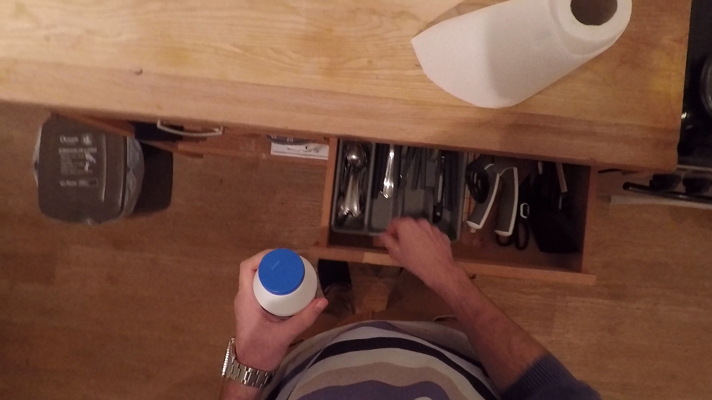

Sample 001



Caption comparison
Before
The drawer is cluttered with a variety of items, including a silverware, a kitchen knife, and a small dish. The drawer's interior is a dark, cluttered mess, reminiscent of a cupboard, with cluttered items such as a pot, utensils, and dishes. The hand is positioned in a position to grasp the contents, indicating that the drawer is open. The handles are positioned slightly away from the drawer, suggesting that the contents are not being accessed. The kitchen sink appears to be a cluttered, unadorned, white, or a combination of both. The cabinet's lighting is dim, suggesting a light source is visible. The object in the middle of the drawer appears
The drawer appears partially open, revealing an assortment of items arranged in a compartmentalized tray. The tray is divided into sections, each holding different utensils and tools. Visible items include several knives with varying blade lengths neatly slotted into individual sections, a pair of scissors, and assorted cutlery such as forks and spoons. The items are organized, but there's a slight overlap of handles, indicating a casual placement rather than a meticulous order. On the far right, obscured by the angle of the drawer, are objects not clearly identifiable, suggesting additional storage beyond the immediate view. The drawer's wood finish matches the surrounding cabinetry, integrating it seamlessly into the kitchen's overall design.
During
The drawer is now more visible, with a more streamlined appearance. The hand is now positioned in the middle of the kitchen counter, revealing a wider view of the contents of the drawer. The drawer's handles are now more rounded, suggesting a closer view of items. The kitchen counter is now slightly more open, indicating a greater variety of items, including a larger variety of dishes. The person's hand is still positioned at the top of the cabinet, demonstrating a slight movement.
In this frame, the drawer is pulled further open, and more items are now visible. The previously seen utensils remain in place, but additional tools come into view, such as a handheld can opener, more cutlery, and possibly kitchen gadgets like a peeler or a bottle opener. There's a noticeable increase in the variety of items as compared to the first frame, and the array of utensils suggests a well-equipped kitchen drawer. The organization of the drawer remains consistent, with each item still in its designated compartment, yet the drawer's contents are densely packed, indicating a well-used space.
After
The drawer is now a more visible object, with the person's hand firmly grasping the edge of the drawer, revealing a curved edge. The hand's angle is slightly altered, suggesting that the hand is now more angled, indicating that the drawer is more or less closed. The person'd hand is still positioned in the middle of the kitchen counter, allowing the person to grasp the drawer's contents. The drawer'len remains intact, with a single piece of the utensil still visible.
The drawer is now fully extended, offering a complete view of its contents. The organization is consistent throughout the entire length of the drawer, with each tool and utensil visible and accessible. The full extension reveals items that were previously hidden, including larger utensils and possibly some kitchen gadgets that are tucked away towards the back. The variety of items, from basic cutlery to more specialized tools, suggests a comprehensive collection designed to cater to a wide range of culinary tasks. The presence of multiple knives and utensils hints at the preparation of diverse meals, and the full view emphasizes the practical organization of the drawer.
Transition
The progression of the kitchen drawer transitions from a partially open state to a fully opened state. Initially, the drawer is partially open, with the hand guiding the action. As the frames progress, the hand's movements become more deliberate, indicating that the drawer has been opened. By the final frame, the person's actions become more intentional, demonstrating the action of opening the drawer. The hand'
As the drawer opens progressively from the first to the third frame, there's a clear transition from partial visibility to full exposure of its contents. Initially, only a fraction of the drawer's items is visible, mainly knives and some cutlery. As the drawer opens further, more items are revealed, expanding the view to include a variety of kitchen tools. The final frame shows the drawer in its fully extended state, displaying an orderly arrangement of utensils, which reflects a well-stocked and systematically organized kitchen drawer. Throughout these transitions, the orderliness of the drawer's contents remains intact, suggesting a functional and well-maintained storage system.